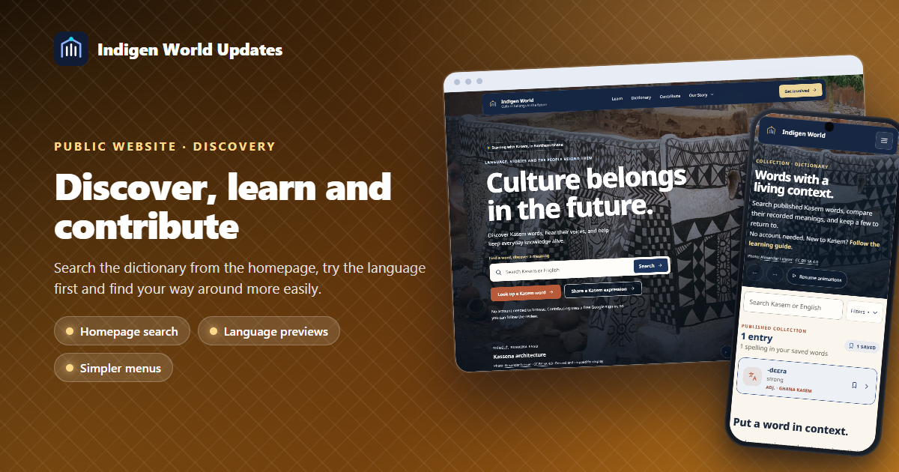
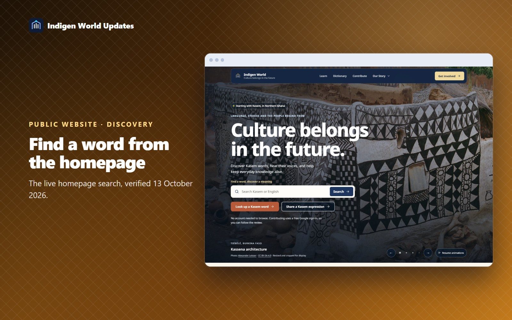
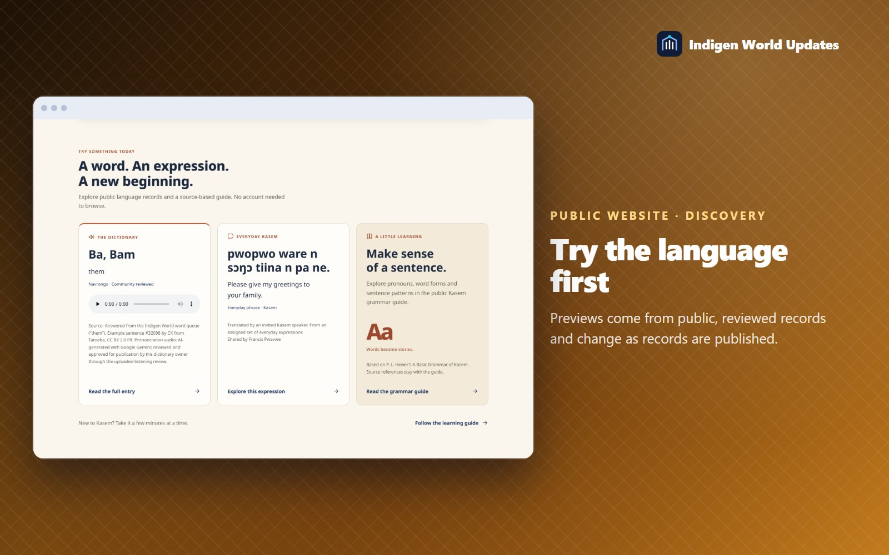
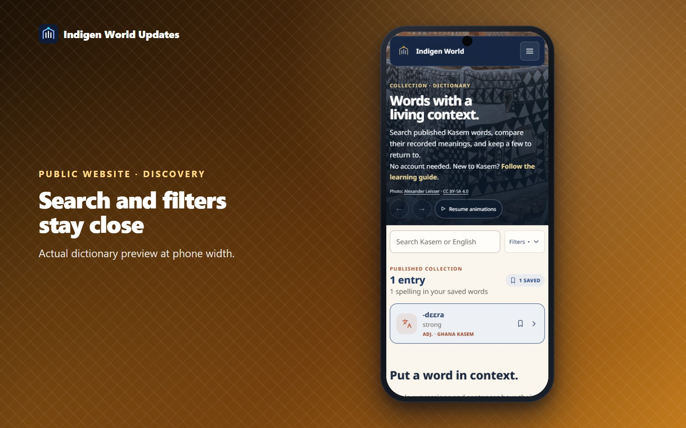
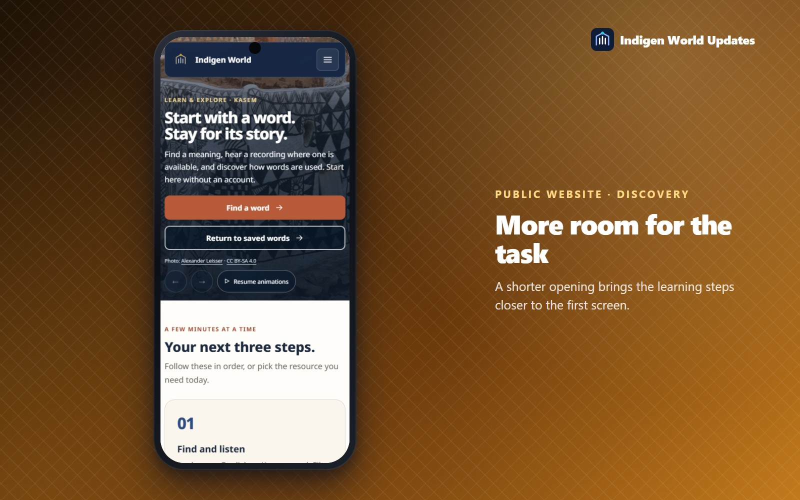

A good welcome should lead somewhere useful. Indigen World's public website now brings dictionary search, language previews and learning resources closer to the first visit, with a warmer visual style and simpler navigation.

Availability: The refreshed public website was deployed and verified on October 13, 2026. The public dictionary and guides can be browsed without an account; contributing uses the existing free Google sign-in and review process.
Since then: on October 13, the photographs in the page openings were replaced by original illustrated community scenes. The search, previews and navigation described here are unchanged.
The cultural opening now includes a search field. Enter a Kasem or English word and choose Search to open the dictionary with your query already filled in. Kasem letters, tone marks and punctuation are preserved.

A new discovery section presents a reviewed dictionary word, a published everyday expression and the public Kasem grammar guide. Language previews come from public records, with their meanings, source details and recorded review labels. A pronunciation player appears when the featured word has a recording; playback starts only when you choose it.
Choose Read the full entry to open the featured word. Choose Explore this expression to find its record on the contribution page. The guide retains its references to P. L. Hewer's A Basic Grammar of Kasem.

The header puts Learn, Dictionary and Contribute first. Open Our Story for information about Indigen World, Project Kassena, community progress, sources and permissions, and the wider ecosystem. The same grouping is available from the phone menu.
The homepage now moves from trying the language to exploring the project, then contributing and following progress. Its story cards scroll in an ordinary sequence. Deep indigo, warm cream, terracotta and gold connect the pages, with simpler buttons and fewer layered decorative effects.
Dictionary, Learn and Contribute use shorter photographic openings, with visible photo credits and motion controls. On the dictionary page, the search field stays near the top while you scroll. Choose Filters to switch between all and saved words, select a dialect or source label, or show entries with recordings. An indicator shows when a filter is applied.


Dictionary results appear directly, without entrance animations. The shared pause preference and reduced-motion support remain available. The mobile app has its own availability and remains listed through the website waitlist.
A word preview requires a public record with an explicit community-reviewed or expert-authenticated label. If no eligible preview is available, the card offers a route to the dictionary. Recordings, examples and source details vary by entry. Empty collections and connection failures show helpful links or retry controls, without invented language examples.
Sharing an expression is a volunteer activity. A Kasem-speaking reviewer checks it before publication. Visit indigenworld.com to search, learn and find your way to take part.